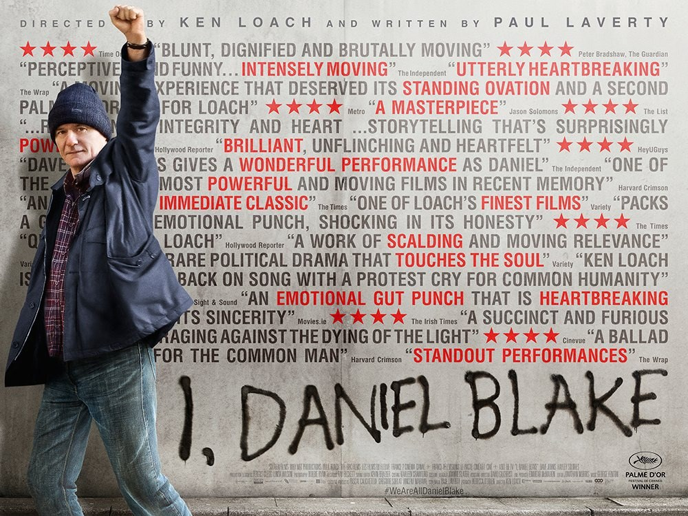

Fiche technique

Synopsis
Daniel Blake, 59 ans, menuisier veuf de Newcastle, sort d'un infarctus. Son cardiologue lui interdit de travailler ; l'« évaluatrice » mandatée par l'administration, déroulant son questionnaire à points, le déclare apte. Le voilà pris dans le paradoxe fondateur du film : trop malade pour travailler, pas assez pour être indemnisé — sommé, pour toucher l'allocation chômage, de chercher activement un emploi qu'il lui est interdit d'accepter[1][2].
Dans la file du jobcentre, il prend la défense de Katie, mère célibataire relogée à 450 kilomètres de son Londres natal avec ses deux enfants. Entre le vieil artisan qui ne sait pas se servir d'une souris et la jeune femme qui saute des repas, se noue une solidarité de naufragés — jusqu'aux deux scènes qui ont fait le tour du monde : Katie craquant devant une boîte de conserve à la banque alimentaire, et Daniel écrivant son nom à la bombe sur le mur de l'administration qui l'efface[2][3].
Contexte de production
Ken Loach avait annoncé sa retraite après Jimmy's Hall (2014) ; c'est la colère qui l'en a fait sortir. Son scénariste de toujours, Paul Laverty, enquête pendant des mois sur le système de protection sociale britannique remodelé par l'austérité — entretiens avec des allocataires, des agents des jobcentres, des bénévoles de banques alimentaires — et le film revendique cette exactitude documentaire : chaque aberration du récit a son équivalent consigné dans le réel[1].
Tournage à Newcastle à l'automne 2015, dans l'ordre chronologique du script selon la méthode Loach, avec la photographie de Robbie Ryan et un pari de casting typique : le rôle-titre confié à Dave Johns, humoriste de stand-up de Newcastle qui n'avait jamais fait de cinéma, face à Hayley Squires, quasi débutante[1]. Production Sixteen Films avec les Français de Why Not et Wild Bunch — le vieux compagnonnage franco-britannique de Loach, qui explique aussi la ferveur cannoise de sa réception[1].
Structure narrative
Le film s'ouvre sur un écran noir et un dialogue de sourds : l'évaluation téléphonique de Daniel, questionnaire absurde égrené hors champ — pouvez-vous lever un bras ? porter un chapeau ? — pendant que la question du cœur, la seule qui compte, est expédiée. Toute la dramaturgie est là : un homme qualitatif face à un système quantitatif, et le récit progresse en stations — rendez-vous, files d'attente, formulaires en ligne, sanctions — comme un chemin de croix administratif dont chaque étape retire quelque chose[2].
Le contrepoint est la ligne de la solidarité : Daniel répare, bricole, fabrique des mobiles en bois pour les enfants de Katie — l'artisan continuant d'exister par les mains dans un monde qui ne reconnaît que les écrans. La critique française a résumé la mécanique d'une image : « nouvelle version de Don Quichotte », le chevalier des temps modernes « en lutte avec les moulins à vent de l'administration »[3] — à ceci près que Loach refuse le pittoresque : son Quichotte meurt dans les toilettes d'un tribunal des recours, cinq minutes avant d'être entendu.
Mise en scène et procédés techniques
L'art de Loach est un art de l'effacement : caméra posée à distance de documentaire, lumière naturelle de Robbie Ryan, montage sans effets, et une bande musicale réduite à presque rien — « sans accompagnements musicaux qui pourraient trop appuyer une émotion »[2], George Fenton n'intervenant qu'aux lisières. Les acteurs découvrent le scénario au jour le jour, les partenaires de scène sont souvent de vrais agents, de vrais bénévoles — d'où ces textures de réel qu'aucune direction d'acteurs ne fabrique[1].
C'est cette sobriété qui arme la scène de la banque alimentaire — Katie, affamée, ouvrant une conserve froide au milieu des rayonnages, et l'humiliation qui déborde — « une détresse rarement montrée à l'écran de manière aussi directe », filmée « avec pudeur »[3] : pas de musique, pas de gros plan insistant, juste la durée exacte de la honte et la main de la bénévole. Le graffiti final obéit à la même économie : un homme écrit son nom — « Moi, Daniel Blake, j'exige... » — et cette signature au feutre gras sur le mur gris est le seul plan « lyrique » que le film s'autorise. Il suffit[2][3].
Personnages principaux
Daniel Blake (Dave Johns) est l'anti-victime : digne, drôle — l'humour de stand-up de Johns irrigue le rôle sans jamais le trahir —, compétent dans tout ce que le système ne mesure pas. Son analphabétisme numérique (« je suis un crayon, pas un clavier ») n'est pas un gag mais une thèse : la dématérialisation comme machine à fabriquer des inexistants. Katie (Hayley Squires, révélation) porte la part la plus dure du film — la faim, la prostitution comme dernier recours, la honte devant ses enfants — avec une rage rentrée qui évite tout misérabilisme[1][2].
Autour d'eux, Loach distribue sa vision du monde en visages secondaires : China, le jeune voisin débrouillard qui importe des baskets de Chine — le capitalisme informel comme seule échelle sociale restante ; les agents du jobcentre, ni monstres ni alliés, partagés entre la fonctionnaire compatissante rappelée à l'ordre et les applicateurs zélés du règlement — la banalité administrative du mal, version guichet[2].
Thèmes
Le thème central tient dans le titre : le « Moi » — la première personne comme acte de résistance. Face à un système qui ne connaît que des « demandeurs », des « dossiers » et des « sanctions », Daniel oppose l'entêtement d'être quelqu'un : « Je ne suis pas un client, ni un usager. Je suis un citoyen, rien de plus, rien de moins » — le texte que le film lit sur sa tombe est devenu, littéralement, un manifeste. La dignité n'y est pas un sentiment mais un droit, et le film documente pas à pas son démantèlement bureaucratique[2][3].
Deuxième thème : la déshumanisation par la procédure — une société devenue « mécanique, technologique et déshumanisée »[2], où la cruauté n'a plus besoin de cruels : des « lois immuables », des scripts téléphoniques et des délais suffisent. Et troisième, l'antidote loachien de toujours : la solidarité horizontale — Daniel et Katie, le voisin, la bénévole — « dernières barrières à l'indifférence »[3], l'entraide des pauvres filmée comme la seule institution qui fonctionne encore.
Réception critique et postérité
Palme d'or à Cannes 2016 — la seconde de Loach, dix ans après Le vent se lève, faisant de lui l'un des rares doubles palmés de l'histoire — puis BAFTA du meilleur film britannique, César du meilleur film étranger, et le plus gros succès de Loach au box-office britannique (15,8 M$ au total)[1]. La presse est largement conquise (92 % sur Rotten Tomatoes), la France saluant la « précision à la limite du documentaire »[3] — avec sa minorité récurrente dénonçant le « manichéisme » et les « grosses ficelles » du pathos loachien[3] : le débat rituel autour de chaque film du cinéaste.
Mais la vraie réception fut politique : le gouvernement britannique balaya le film comme « fiction », des ministres furent sommés de dire s'ils l'avaient vu, l'opposition le brandit aux Communes, et les associations de terrain confirmèrent une à une les situations décrites[1]. Rarement un film aura à ce point court-circuité le commentaire culturel pour entrer directement dans le débat public — des projections militantes aux murs de Newcastle, où le graffiti du titre fut reproduit en vrai. « I, Daniel Blake » est passé du scénario au langage courant : c'est la définition même d'une œuvre devenue référence.
Conclusion
Moi, Daniel Blake est du cinéma pauvre en apparence — deux acteurs peu connus, des bureaux, des files d'attente, pas un plan qui se signale — et c'est exactement sa force : la mise en scène épouse la matière qu'elle dénonce, grise, procédurale, inexorable, pour mieux faire éclater ce qui lui résiste : deux ou trois visages, une conserve ouverte, un nom sur un mur. On peut discuter la thèse, comme la critique n'a pas manqué de le faire ; on ne peut pas discuter la scène de la banque alimentaire — il n'existe pas d'équivalent de sa justesse dans le cinéma européen récent.
À 80 ans, avec sa deuxième Palme, Loach n'a pas signé son film le plus subtil mais peut-être son plus nécessaire : un film-outil, conçu pour servir — et qui a servi. L'épitaphe de Daniel, « je suis un citoyen, rien de plus, rien de moins », restera comme l'une des grandes déclarations du cinéma politique : la revendication la plus modeste qui soit, devenue, dans l'Angleterre de l'austérité comme partout où le guichet remplace le regard, la plus difficile à faire entendre.
Sources
- Wikipédia (en) — « I, Daniel Blake » : production (enquête de Paul Laverty, Newcastle octobre 2015, Robbie Ryan, Sixteen Films/Why Not/Wild Bunch/BFI/BBC), casting (Dave Johns, Hayley Squires), palmarès (Palme d'or, BAFTA, César du film étranger), box-office record pour Loach, réactions politiques (gouvernement qualifiant le film de « fiction »). en.wikipedia.org/wiki/I,_Daniel_Blake
- À la rencontre du septième art — « Moi, Daniel Blake (Ken Loach, 2016) - Critique & Analyse » : sobriété de la mise en scène (absence d'accompagnement musical), paradoxe administratif fondateur, situation de Katie, société « mécanique, technologique et déshumanisée ». alarencontreduseptiemeart.com
- Presse française consultée via recherche web (LeMagduCine, Bande à part, avoir-alire, Abus de Ciné, Le Blog du Cinéma) : « précision à la limite du documentaire », scène de la banque alimentaire, figure de Don Quichotte, solidarité comme dernière barrière, et contrepoint critique (« manichéisme », pathos). lemagducine.fr
- Festival de Cannes — fiche officielle « I, Daniel Blake » (Palme d'or 2016). festival-cannes.com